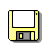

Ho suddiviso la "Modalità Eye Gaze" in diverse funzionalità discrete:
↩️Pulsante di annullamento rapido: aggiunge un pulsante di annullamento mobile sempre visibile.
🔍Ingrandisci l'interfaccia utente: Ingrandisce menu, pulsanti e finestre.
⏱️Clicker di permanenza: fa clic automaticamente passando il mouse sopra i controlli per un certo periodo.
↕️Casella dei colori verticale: rende la casella Colori alta anziché larga.
(Questo era già suddiviso.)
Ho anche aggiunto una nuovissima funzionalità:
🧑Localizzatore di testa: consente di spostare il cursore con la testa.
(Guarda il video dimostrativo qui sotto!)
↩️Pulsante di annullamento rapido
Extra > Pulsante Annulla rapidorappresenta un enorme progresso per l'usabilità sui dispositivi touchscreen.
Commettere errori non è più un compito ingrato. Basta toccare, toccare, toccare per annullare. Facile così.
🔍Ingrandisci l'interfaccia utente
Extra > Ingrandisci l'interfaccia utenteaumenta la dimensione di menu, pulsanti e finestre.
Il ridimensionamento delle barre degli strumenti e dei menu sarà limitato
allo spazio disponibile sullo schermo, rendendolo più utile sui dispositivi mobili,
rispetto al ridimensionamento dell'interfaccia utente di base esistente nella modalità Eye Gaze.
⏱️Clicker di permanenza
Extra > Dwell Clickerfa clic automaticamente passando il mouse.
È destinato all'uso con un eye tracker o un head tracker—software (e facoltativamente
hardware specializzato) che consente di spostare il mouse senza usare le mani.
Questa era la caratteristica principale della modalità Eye Gaze, ma ora può essere utilizzata in qualsiasi configurazione dell'interfaccia utente: con any
tema, con o senza interfaccia utente ingrandita, con una casella di colori orizzontale o verticale.
🧑Head Tracker (funzione tutta nuova!)
Extra > Tracciamento della testala modalità utilizza la tua webcam per
traccia i movimenti della testa e sposta il cursore del mouse di conseguenza.
Ho registrato un breve video dimostrativo, disegnando il logo Tracky Mouse utilizzando Tracky Mouse:
Disegnare il logo Tracky Mouse utilizzando Tracky Mouse.Mi sono assicurato di inclinare la webcam verso il basso in modo che tu possa vedere che non sto usando le braccia.
Per provarlo:
AbilitareExtra > Tracciamento della testa
ClicInizioe consenti l'accesso alla tua fotocamera.
Assicurati che il tuo viso sia ben illuminato e centrato nel campo visivo della fotocamera.
Regola le impostazioni di sensibilità e fluidità a tuo piacimento.
Muovi la testa per spostare il punto rosso sulla pagina, che funge da cursore, e passa il mouse sopra gli elementi
per fare clic su di essi.
Suggerimenti:
Puoi mettere in pausa il clic prolungato passando il mouse sul pulsante Pausa
()
nell'angolo in basso a sinistra.
Quando si passa il mouse sulla barra del titolo di una finestra o si utilizzano determinati strumenti nell'area di disegno,
come il pennello, sa che è necessario tenere premuto il pulsante del mouse per trascinare o disegnare.
La sosta successiva verrà rilasciata invece di fare clic.
Se riduci a icona la finestra di Tracky Mouse, questa verrà ridotta a icona in un pulsante nella barra dei menu,
su cui è possibile fare clic per ripristinare la finestra.
Se chiudi la finestra, la funzione verrà disabilitata.
Al momento funziona solo con il clic prolungato e abilita automaticamente il clic automatico,
ma in futuro potrebbe funzionare con altri modi di fare clic, come sbattere le palpebre o sorridere.
Puoi anche scaricare ilTracky Mouseapp desktop per controllare l'intero computer con la testa.
Assicurati che tutti i collegamenti si aprano in una nuova scheda.
(⟜
Gli è stato fatto utilizzare un'icona dell'app più grande
(⟜);
ha anche creato una versione più grande della variante dell'icona del gay pride per il mese dell'orgoglio
(⟜
Aggiunto un numero di versione nella finestra Informazioni
(⟜)
e lo ho spostato su una nuova riga
(⟜
Spostato l'indicatore dello stato del controllo degli aggiornamenti accanto all'icona
(⟜
Risolto il problema con il centraggio della finestra Informazioni su schermi piccoli
(⟜
Varie Cambiamenti
Ho aggiornato JS Paint all'interno98.js.orgrecentemente, anche se potrebbe non avere ancora le ultime modifiche.
Se un'immagine viene rilasciata nella finestra Notizie sul progetto, non tenterà più di aprirla come documento.
È stato facile farlo accidentalmente facendo clic e trascinando pigramente durante la lettura delle notizie.
(⟜
Risolte le voci del menu delle caselle di controllo che mostravano una griglia di piccoli segni di spunta invece di un singolo segno di spunta
nell'app Electron con la modalità Ingrandisci interfaccia utente abilitata.
(⟜
Il Dwell Clicker ora può attivare/disattivare i dettagli compressi nelle finestre di dialogo di errore.
(⟜
Abilitato il trascinamento delle barre degli strumenti con il mouse in Dwell Clicker
(ma non con il clicker fisso stesso).
(⟜
Corretta la dimensione della barra del titolo per le finestre degli strumenti in modalità Ingrandimento dell'interfaccia utente.
(⟜
Tutte le icone degli strumenti a tema ora funzionano in modalità Ingrandimento dell'interfaccia utente.
(⟜⟜⟜
Ho implementato l'indicatore di stato delle dimensioni per tutti gli strumenti.
(⟜
Risolte le etichette di larghezza/altezza mancantiImmagine > Attributidialogo.
(⟜
Risolto il problema con il nome file predefinito durante il salvataggio di uno sfondoFile > Imposta come sfondo
(Affiancato/Centrato)⟜
Risolto il problema con il nome file predefinito durante il salvataggio della selezioneModifica > Copia in,
e un errore che si è verificato conModifica > Copia innell'app Electron.
(⟜
Risolto il problema con l'ignoramento della scelta del formato file durante il salvataggio di una tavolozzaColori > Salva colorinell'app Electron
(⟜
Risolto il problema relativo alla gestione degli errori per l'accesso agli appunti
(⟜
Migrato a ESLint v9 e alla sua configurazione flat e migliorata uniformità del codice.
(⟜⧟⊸
Flusso di lavoro semplificato per il controllo della qualità del codice raggruppando diversi controlli in un unico script
(npm esegui lint⟜
Gestione migliorata degli errori senza traccia dello stack, comeErrore di sintassi.
Ora mostrerà l'URL e i numeri di riga/colonna per gli errori senza stack di chiamate.
(⟜
Risolto un errore che si verificava durante l'integrazione in 98.js.org a causa della ricerca di menu
all'interno del frame dell'app quando in realtà sono all'esterno
(⟜⟜
Contrassegnato più parti di JS PaintsistemaHooksAPI come opzionale
(⟜
Tipi TypeScript definiti per JS PaintsistemaHooksAPI
(⟜
Ho lavorato su funzionalità segrete che dovrebbero essere davvero divertenti in futuro.
Buon Natale!🎄🎁
Tema di gomma da masticare
Tema di gomma da masticare
Presentazione di🫧Gomma da masticaretema!
Il software per ufficio non è mai stato così raffinato come con l'eleganza del tema BubblegumRosa d'affaricombinazione di colori.
Tutte le icone di questo tema eranoGenerato dall'intelligenza artificiale, come esperimento.
L'attuale tecnologia AI tradizionale fatica davvero a creare un set completo di icone in una volta sola,
e lo stile è sempre leggermente diverso da immagine a immagine,
quindi il processo prevedeva la generazione di molte, molte immagini,
di solito richiedendogli di creare un "set di icone" per farlofiduciosamenteottieni alcune icone che corrispondono,
da aggiungere al set di icone complessivo.
C'è pochissimo controllo e spesso le cose risultano instabili o eccessivamente generiche,
ma nel complesso ci vuole davvero poco impegno,
quindi è una cosa strana.
Fortunatamente, sono riuscito a farla franca con alcune differenze stilistiche tra
le icone delle forme astratte e le icone degli strumenti più dettagliate.
Ho modificato manualmente alcune icone, ma per la maggior parte sono così come sono uscite dall'intelligenza artificiale.
La mia preferita è l'icona del pulsante di pausa della modalità Eye Gaze (),
che ho ottenuto gratuitamente in modo casuale a causa dell'interpretazione errata del "contagocce" da parte dell'IA.
Adoro il modo in cui si fonde perfettamente con il pulsante.
Anche gli smussi 3D sono generati dall'intelligenza artificiale, applicati con abbondante utilizzo di bordi a 9 strati.
Prova il nuovo tema
<img src="aiuto/onestep.gif">SuExtramenu, fare clicTemi, PoiGomma da masticare
Le icone non sono ottimizzate per la leggibilità a piccole dimensioni,
quindi assicurati di provarlo insieme aExtra > Modalità Sguardo,
oppure aumenta il livello di zoom del tuo browser,
facendo scorrere la rotellina del mouse tenendo premutoCtrlO⌘,
per l'effetto completo.
Manutenzione
Passando ad altre notizie, ho investito molto per rendere JS Paint più gestibile.
Non vedrai queste modifiche direttamente nell'app,
ma aiutano a rendere il codice piùmalleabile,
come aggiungere acqua all'argilla per modellarla senza romperla.
Convertita quasi interamente la base di codice inModuli ES
Utilizzo rimanente effettuatovariabili globali esplicitein ogni file.
Suddividi alcuni file enormi infile più piccoli
Aggiuntodigitare annotazionialla base di codice, utilizzando i commenti JSDoc.
In questo modo gli errori possono essere individuati prima e gli editor possono fornire un migliore completamento automatico,
il tutto mantenendo il codice in semplice JavaScript, senza alcuna fase di compilazione.
Queste modifiche renderanno più semplice l'aggiunta di nuove interessanti funzionalità a JS Paint in futuro.
(Dopo tutto è "JS Paint", non "TS Paint")
<p>
PS <strong>Fatto curioso</strong>: ECMAScript (ES) è un sinonimo di JavaScript (JS),
che è un linguaggio completamente diverso da Java.
Più ne sai!
Inoltre, TypeScript (TS) è un superset di JavaScript e il compilatore TypeScript (tsc)
può essere utilizzato per verificare la presenza di errori di tipo nel codice JavaScript, non solo per compilare codice TypeScript.
</p>
<p>
(Non è "ES Paint", ma <em>avrebbe potuto essere</em>,
e poi avrei potuto progettare un logo con una "M" ruotata per trasformarlo in una "E".
Occasione persa??🤔)
</p>
Temi e formati di file
Ops, ho dimenticato un'immagine. FARE?
<img width="" Height="" style="max-width: 100%; altezza: auto; rendering delle immagini: auto;" alt="" src="" />
Temi nuovi e aggiornati
Il tema Moderno è stato rinominatoLuce modernae uno nuovoOscurità modernail tema è stato aggiunto.
Modern Light prima (icone degli strumenti da Windows Vista):
Modern Light dopo (icone SVG personalizzate):
TODO: PNG personalizzato ottimizzato per i pixel; SVG è progettato per allinearsi con la griglia di pixel ma non è perfetto
<img alt="" src="images/modern/modern-light-tools.png">
Ho progettato un set di icone personalizzato, ispirato alle icone di Windows Vista.
Ho anche personalizzato in modo significativo le icone per il tema Modern Dark,
per migliorare il contrasto su tutta la linea.
Modern Dark prima (icone degli strumenti di Windows Vista, con artefatti di alias se visualizzati su sfondo scuro
sfondo):
Modern Dark dopo (icone SVG personalizzate):
<img alt="" src="images/modern/modern-dark-tools.png">
Per essere coerenti, usa SVG anche qui. Almeno puoi ingrandire e vedere la scalabilità.
Anche se preferirei un bell'effetto lente d'ingrandimento come https://lenadesign.org/2021/06/30/css-javascript-image-magnifier-glass/
Anche la buccia di cipolla / il passaggio sarebbe utile per il confronto.
Quando si adattano le icone di Vista alla grafica vettoriale scalabile,
Ho dovuto prendere molte decisioni di progettazione sottili, ma la differenza più grande che noterai è questa
lo strumento Pennello corrisponde allo stile classico di un pennello a punta piatta (anche se con sfumature aggiunte),
dal momento che non mi piaceva davvero l'icona dello strumento Pennello di Vista.
Voglio dire, andiamo, è l'unica icona che lo ètagliato fuori, in base alla progettazione!E a me sembra proprio una macchia, almeno nella versione viola. (C'è anche una versione verde.)
Inoltre, un pennello largo enfatizza la distinzione dallo strumento Matita.
Il tema Classico è stato rinominatoLuce classica, e ilClassico scuroil tema è stato
aggiornato.
Classic Light (usando ancora le icone degli strumenti di Windows 98):
Classico scuro prima:
Classico scuro dopo:
Non ero soddisfatto delle icone del tema Classic Dark, in particolare del mio uso del colore;
sembrava un'inversione di colore RGB economica, anche se sono sicuro di averci pensato più di così.
Inoltre, non ero sicuro di come ottenere un buon contrasto con la punta della matita mantenendo una coerenza
stile scheumorfico, poiché la grafite è scura proprio come lo sfondo.
Quindi ho ridisegnato la matita in modo più astratto (tutta bianca compresa la punta),
e ho reso le icone monocromatiche.
In realtà sono un grande fan del colore nelle icone, poiché penso che aiuti a distinguerle,
quindi, se qualcuno vuole cimentarsi con un tema Classico scuro con icone colorate,
sarei interessato a vederlo!
Detto questo, la monocromia ha una bella eleganza; attira meno l'attenzione,
e sono sicuro che alcune persone lo preferiranno sempre.
Formati di file
Per ora ho disabilitato questa funzione, poiché ho visto alcuni file da 0 byte salvati e non voglio VERAMENTE che le persone perdano il lavoro!
Necessita di test approfonditi/implementazione graduale.
Oltre a ciò, non volevo promuovere un'altra funzionalità disponibile solo in Chrome.
<p>
<b>Salva</b> (<kbd>Ctrl+S</kbd>) ora può salvare sul file aperto, nei browser Chrome, Edge e Opera.
Funziona utilizzando il nuovo <a target="_blank"
href="https://developer.mozilla.org/en-US/docs/Web/API/File_System_Access_API">Accesso al file system
API</a>.
Utilizza sempre <b>Salva con nome</b> (<kbd>Ctrl+Shift+S</kbd>) se vuoi salvare un nuovo file.
</p>

File > Salva con nomeora richiede un nome e un formato file.
Sono supportati PNG, GIF e BMP, inclusi BMP a colori indicizzati.
Suggerimento: utilizza PNG se non hai un motivo specifico per utilizzare un altro formato,
poiché ha la migliore qualità durante il salvataggio.
L'ho disabilitato per ora, penso perché non è chiaro se vuoi sempre caricare la tavolozza quando apri un'immagine,
o se dovrebbe essere presente un'interfaccia utente attorno ad esso, come un pulsante Annulla accanto alla tavolozza o un messaggio per caricare la tavolozza.
Anche i PNG indicizzati dovrebbero essere gestiti in modo coerente con i BMP indicizzati.
Il fatto è che, se salvi un'immagine con un sottoinsieme di colori da una tavolozza e poi carichi l'immagine,
potresti non voler caricare la tavolozza, poiché potrebbe semplicemente rimuovere i colori dalla tavolozza,
soprattutto se era la tavolozza predefinita.
Ma un suggerimento sembra fastidioso. Forse dovrebbe caricare solo la tavolozza per le immagini monocromatiche (bicolori)?
Non è chiaro.
<p>
Se apri un file BMP con una tavolozza, la tavolozza viene caricata nella casella Colori.
Se carichi un file BMP monocromatico, verrà caricata una sfumatura di motivi di dithering nella casella Colori.
</p>
<img alt="" src="help/p_monochrome.png" larghezza="14" altezza="11" style="vertical-align: middle;" />
In bianco e neromodalità inImmagine > Attributiè generalizzato per gestire due colori arbitrari
(anche se è ancora chiamato "Bianco e Nero" nella finestra Attributi.)
Se un'immagine ha solo due colori, quando si passa alla modalità "Bianco e nero",
si adatta automaticamente a questi colori e riempie la casella Colori con i modelli di dithering appropriati.
Se usiImmagine > Invertiin modalità Bianco e Nero,
ora scambia i due colori presenti nell'immagine,
invece di convertire i colori nei loro opposti RGB.
Se l'immagine è in bianco e nero puro, queste due operazioni sono equivalenti,
ma ora, per esempio, averde e nerol'immagine diventerà anero e verdeimmagine,
piuttosto cherosa e bianco
Colori > Salva coloriora richiede anche il nome e il formato del file.
Lo è un numero assurdo di formati di filesupportato.
Puoi anche esportare variabili CSS da utilizzare in un progetto di web design.
La tavolozza RIFF (*.pal) è compatibile con MS Paint e la tavolozza GIMP (*.gpl) è compatibile con molti
programmi di grafica sorgente come Inkscape e Krita.
Puoi trovare molte tavolozze su cui utilizzareLospec.
Scarica una tavolozza come GIMP GPL e utilizzaColori > Ottieni coloriselezionare
il file oppure trascina e rilascia il file su JS Paint per caricare la tavolozza.
API
Ho anche documentato una prima versione dell'API per JS Paint.
Non ho ancora inserito molta progettazione nell'API; piuttosto, ho appena documentato l'interfaccia che ho ideato
per mio uso personale in98.js.org.
In altre parole, questa è più una bozza di un'API, anche se creerò sicuramente un registro delle modifiche
quando decido di ripulirlo.
Quindi sentiti libero di iniziare a usarlo se non ti dispiace aggiornare il tuo codice man mano che l'API cambia.
Se vuoi incorporare JS Paint nel tuo progetto, puoi dare un'occhiata al fileIncorpora nel tuo sito websezione del file Leggimi.Hm, potrei voler spostarlo in un file di markdown separato... ma magari mantenerlo in giro in modo che il collegamento rimanga valido.
JS Paint è ora finalmente open source, concesso in licenza con ilLicenza del MIT
Il progetto è statofonte disponibilefin dall'inizio, poiché non ho mai sentito il bisogno di offuscare o nascondere il codice,
ma ora è legalmente open source.
Non vedo l'ora di vedere come usi JS Paint nei tuoi progetti!
Non esiste ancora un'API formale per JS Paint,
ma se vuoi essere all'avanguardia,
puoi dare un'occhiata a come98.js.orgincorpora JS Paint.
Aspettatevi che l'API cambi in modo significativo in futuro.
Ho intenzione di rendere JS Paint open source da molto tempo.
Ci sono alcuni problemi legali, risorse di cui non ho il copyright,
ma penso che generalmente dovrebbero rientrare nel fair use.
E ho creato bellissime versioni SVG delle icone,
quindi è probabilmente possibile avere una versione di JS Paint senza risorse direttamente protette da copyright.
Ma alla fine ho deciso di smettere di preoccuparmene,
e basta già renderlo open source!
Spero che JS Paint ti piaccia!
L'aggiornamento GUIcci
Nuove funzionalità
Visualizza > Zoom > Mostra miniaturaper mostrare un'anteprima dell'immagine di piccole dimensioni, ottima per la pixel art.
Apporta modifiche fini e precise, mantenendo tutto in prospettiva.
Zoom con le dita:Se disponi di un touchscreen, utilizza due dita per ingrandire e rimpicciolire e per eseguire la panoramica.
Alt+Rotellina del mouseper ingrandire e rimpicciolire rapidamente sul desktop.
A differenza dello strumento Lente di ingrandimento, questo consente di eseguire lo zoom mentre si effettua (o si sposta) una selezione, per aggiungerla
precisione.
AggiuntoVisualizza > Schermo interoper attivare la modalità a schermo intero. Questo è utile per usare JS Paint sul tuo telefono.
ILStrumento di testoora espande automaticamente la casella di testo durante la digitazione.
Durante il ridimensionamento, ora esiste una dimensione minima basata sul testo nella casella di testo.
Visualizza in anteprima esattamente la dimensione che otterrà durante il ridimensionamento.
Attracco:Se trascini la casella Colori o Strumenti in una finestra,
ora puoi agganciarlo nuovamente quando trascini la barra del titolo.
In precedenza per agganciarlo dovevi fare doppio clic sulla barra del titolo o trascinarlo lungo il bordo della finestra.
Menùsono ora completamente accessibili tramite tastiera (e lettore di schermo).
In particolare, puoi trattenereAlte premere il tasto di accesso di un pulsante del menu per aprire il menu,
e poi (senzaAlt) premere il tasto di accesso di una voce di menu per selezionarla.
La chiave di accesso di un elemento è la lettera sottolineata o la prima lettera del testo dell'elemento se non è presente
sottolineare.
Dettagli dell'erroresono ora nascosti per impostazione predefinita nelle finestre di dialogo di errore.
I dettagli possono essere più schiaccianti che utili in molti casi,
ma se ne hai bisogno puoi espandere i dettagli.
File > Esciora esce sul desktop web ufficiale,98.js.org,
una ricostruzione di Windows 98, piena di giochi e applicazioni.
Questo progetto è nato da JS Paint e ora l'ho implementato
Registratore di suoni, Blocco note, Calcolatrice e persino Esplora risorse,
ad un elevato livello di dettaglio.
Include anche progetti di altre persone, altre ricreazioni di vecchi programmi,
piaceWebamp,
una meticolosa ricreazione di Winamp,
eSolitario JS,
un clone del solitario (l'ho ottimizzato per la precisione, aggiungendo le immagini sul retro delle carte, ecc.)
Pixel perfetto
Tutti gli elementi dell'interfaccia ora hanno uno stile tematico,
alimentato daOS-GUI.jsE98.css
L'intera interfaccia ora è perfettamente precisa rispetto a Windows 98.
(Ok, ci sono alcune cose che sono un pixel fuori posto, ma sul serio,
Ho allineato uno screenshot e l'ho ottenuto essenzialmente perfetto.)
Layout migliorato diVisualizza > Zoom > Zoom personalizzatofinestra, corrispondente al disegno in MS Paint.
Aggiunta imbottitura a tutte le finestre di dialogo in modo che non si sentano più anguste.
Le finestre di messaggio ora includono icone di avviso o di errore e riproducono un suono quando vengono visualizzate.
MiglioratoVisualizza > Visualizza bitmap: ora utilizza il colore di sfondo dello sfondo del tema,
se l'immagine è più piccola della finestra.
Ora si chiude con un clic o premendo un tasto e non ti consente di modificare l'immagine (il che era strano).
La finestra della Guida ora può essere ridotta a icona nella parte inferiore dello schermo, anche se non è presente la barra delle applicazioni.
Funziona come Windows 98 se il processo di gestione della barra delle applicazioni si blocca.
Correzioni
Pulsanti del menusono più facili da aprire su un touch screen. A volte dovevi toccare due volte prima del menu
aperto.
Fissospazzola quadrata grandecontinuità (prima lasciava dei vuoti, a causa di un'implementazione semi-implementata
ottimizzazione).
ILselezione e caselle di testonon "esplodono" più se li ridimensioni a una dimensione minima.
Ora sono limitati quando trascini un bordo oltre il bordo opposto.
Risolto un bug per il quale le selezioni sottili verticalmente erano difficili o impossibili da trascinare (nonostante mostrassero un file
trascinare il cursore).
(La regione trascinabile è stata spostata all'esterno della casella di selezione.)
Risolto un bug simile per cui le anteprime degli strumenti venivano sfalsate se l'altezza della tela era molto piccola.
Le maniglie di ridimensionamento non si riducono più quando l'oggetto da ridimensionare è molto piccolo.
Anche la regione trascinabile per le maniglie non diventa più piccola, tranne nelle dimensioni in cui è necessario.
Ora è notevolmente più intelligente di Windows 10 riguardo alla posizione da cui trascinare le maniglie.
InImmagine > Capovolgi/Ruota, ora puoi fare clic sul campo di immissione dei gradi personalizzati prima di selezionare il file
Opzione "Ruota per angolo".
L'anteprima della lente di ingrandimento e le anteprime di altri strumenti ora sono nascoste durante il trascinamento della casella Colori o Strumenti.
Sembrava confuso quando l'anteprima della lente d'ingrandimento veniva mostrata contemporaneamente a
il contorno dell'anteprima per trascinare/ancorare una finestra degli strumenti.
Per le lingue che leggonoda destra a sinistra, la vista Cronologia (Modifica > Cronologia) ora utilizza a
disposizione da destra a sinistra,
inoltre, la casella dei colori e la casella degli strumenti non invertono più il layout quando vengono trascinate in una finestra o agganciate
riportarli a un lato dell'applicazione.
Utilizzano la visualizzazione della cronologia e i messaggi di erroretesto più localizzato
Fissotagliare le iconenei pulsanti nella barra degli strumenti della finestra della guida nel tema Moderno.
Tutte le finestre ora hanno un controllo con focus predefinito e viene ricordato l'ultimo controllo con focus nella finestra
per quando rimetti a fuoco la finestra.
File > NuovoEFile > Apriora crea una nuova sessione di salvataggio automatico,
invece di utilizzare la sessione corrente.
Tema invernale
Aggiornato il tema invernale con pulsanti degli strumenti in stile calendario dell'avvento,
che rivelano pixel art festivi (migliorati) per ogni strumento quando li selezioni.
Ciò significa che il tema invernale è più utilizzabile,
poiché non oscura le funzioni di tutti gli strumenti con pixel art.
Inoltre, se non ti sembra abbastanza un calendario dell'avvento,
puoi trattenereSpostareper selezionare più strumenti contemporaneamente.
Forse potresti realizzare un disegno utilizzando un solo strumento per i 16 giorni che precedono il Natale,
ovviamente con l'eccezione degli strumenti Scegli colore e Lente d'ingrandimento.
I fiocchi di neve nei menu indicano quale lettera puoi premere per selezionare quella voce.
Per disattivare il tema Inverno, fai clic sul Grinch nella parte inferiore dello schermo,
che poi ti farà un sorriso cattivo e ti ruberà il Natale.
Puoi riaverlo conExtra > Tema > Inverno
L'aggiornamento sull'accessibilità
Supporto multilingue
JS Paint è ora ampiamente localizzato in 26 lingue.
Potresti chiedere come faccio a rilasciare così tante lingue al rilascio iniziale del supporto multilingue?
Ebbene, questo progetto ha l'opportunità alquanto unica di riutilizzare le localizzazioni di un programma esistente,
poiché è principalmente un remake di MS Paint.
Ho scaricato e installato26 versioni di Windows
98 nelle macchine virtuali,
ed estratto il testo da mspaint.exe in ognuno di essi,
utilizzando una serie di script a cui ho scritto per aiutarmi ad automatizzare il processo.
Per cambiare la lingua, vai aExtra > Lingua.
La tua lingua preferita potrebbe già essere rilevata, se specificata nelle impostazioni del sistema o del browser.
Per l'arabo è supportato il layout da destra a sinistra!
Mi sono cimentato con la calligrafia araba...
Se vuoi contribuire con le traduzioni,mettiti in contatto!Devo svolgere del lavoro tecnico per impostare le traduzioni della community su una piattaforma pubblica,
ma sono felice che le persone abbiano già espresso interesse ad aiutare a tradurre!
(Voglio anche semplificare la lingua in varie parti dell'interfaccia utente prima di chiedere alle persone di tradurre
loro.)
Modalità sguardo
La modalità Eye Gaze ti consente di controllare JS Paint senza usare le mani.
È destinato all'uso con un eye tracker, un head tracker o altri scenari di input grossolani.
Non hai bisogno di un dispositivo eye tracker da mille dollari per giocare con questo, solo una webcam e alcuni gratuiti
software.
raccomandoAbilita ViaCam, che ènonun rilevatore dello sguardo,
ma piuttosto un rilevatore generale del movimento video che puoi impostare per monitorare il movimento della testa (o del tuo
busto o mano o qualsiasi altra cosa).
Il tracciamento oculare tramite webcam ha molta strada da fare, ma è anche piuttosto sorprendente di per sé.
TentativoGazPointer
Il monitoraggio dello sguardo richiede una calibrazione significativa e, se la calibrazione è disattivata,
è difficile da usare perché non puoi guardare dove vuoi guardare per interagire con le cose.
Questo è il motivo per cui consiglio l'head tracking (se questa è un'opzione per te),
perché così potrai guardarti intorno liberamente e controllare il cursoreindipendentemente,
quindi se viene spostato, puoi semplicemente inclinare leggermente la testa.
La modalità Eye Gaze è pensata principalmente per le persone con disabilità motorie come la SLA o la paralisi cerebrale.
ma può anche essere semplicemente una sorta di esperienza magica.
Può anche essere frustrante e richiede un po' di pratica per padroneggiarlo.
Un buon punto di partenza è colorare la grafica utilizzando solo lo strumento Riempimento (
Puoi convertirli in bianco e neroImmagine > Attributi, quindi tornare a
Colori.
(Questo lo fa funzionare meglio con lo strumento Riempimento.)
Abilita la modalità sguardo conExtra > Modalità Sguardoe nota che inizierà a fare clic dove
ti alzi.
Puoi disattivare questa sosta facendo clic con l'icona a forma di occhio nella parte inferiore dello schermo.
Fai in modo che l'immagine riempia lo schermoVisualizza > Zoom > Zoom sulla finestra
Bonus:Da quando ho implementato una casella di colore verticale per la modalità Eye Gaze,
Ho deciso di renderlo disponibile come opzione separata. Accedi conExtra > Casella colore verticale
Riconoscimento vocale
Usando solo la tua voce, puoi cambiare strumenti e colori, eseguire la panoramica della vista, fare clic sui pulsanti sullo schermo
nome e utilizzare la maggior parte delle voci di menu.
Puoi anche dire "disegna un gatto con un cappello da festa" per fare in modo che JS Paint provi a disegnare un gatto con un cappello da festa.
Questa funzionalità si abbina bene alla modalità Eye Gaze per un'esperienza più completa a mani libere.
La funzione è disponibile solo su Chrome e comprende solo l'inglese.
Tieni presente che Chrome invia la tua voce ai server di Google.
Accedi conExtra > Riconoscimento vocale. Se questa opzione è disattivata, il tuo browser non lo è
supportato.
JS Paint mostrerà ciò che pensa tu abbia detto nella barra di stato nella parte inferiore dello schermo.
Esistono molti sinonimi di comandi e spesso puoi fare cose con frasi molto brevi come "Curva"
per passare allo strumento Curva.
Se non riconosce la tua voce per comandi brevi come "Curva" o "Taglia", potresti provare più a lungo
frasi come "Strumento curva" o "Taglia selezione",
poiché questo aiuta a distinguere il suono come parlato, piuttosto che come tosse, ad esempio.
Finestra di dialogo Modifica colori
Ho anche implementato la finestra di dialogo Modifica colori. In precedenza questo utilizzava il selettore colori del sistema nativo e
non ha funzionato per alcune persone.
Accedi conColori > Modifica colorioppure fare doppio clic su un colore nella tavolozza per modificarlo.
Un'animazione che si trasforma tra JS Paint e la finestra di dialogo di selezione dei colori di MS Paint. È carino
vicino, diverso dal carattere.
In questa finestra di dialogo sono supportate le scorciatoie da tastiera e l'ho creata per i dispositivi mobili con schermi piccoli
considera l'aggiunta di colori personalizzati come una schermata separata.
Conclusione
JS Paint dovrebbe essere molto più accessibile ora. E futuristico.
Naturalmente c'è sempre di più che si potrebbe fare.
La modalità Sguardo oculare potrebbe utilizzare lo smussamento del tratto di pennello e il riconoscimento vocale potrebbe utilizzare il generale artificiale
Intelligenza.
Mi piacerebbe vedere le persone usare JS Paint, in particolare la modalità Eye Gaze e il riconoscimento vocale,
quindi se registri un video sull'utilizzo di JS Paint, per favoreinviare
comunicamelo attraverso questo modulo.Questo mi fa capire cosa è veramente importante per le persone e cosa crea confusione,
e mi dà la motivazione per lavorare su nuove funzionalità.
Aggiornamento invernale
Tema invernale
È disponibile una nuova skin dell'interfaccia utente, sottoExtra > Temi > Inverno, caratterizzato da inverno e vacanze
icone, caratteri festivi e una tavolozza con colori stagionali e motivi alla menta piperita.
Buon Natale e felice Hanukkah!
Storia migliore
Nuovo:Salta a qualsiasi punto della cronologia del documento, avanti o indietro, conModifica
> StoriaOCtrl+Maiusc+Y
Fare clic su Testo nella visualizzazione cronologia per tornare alla modifica del testo.
È possibile tornare a quando esisteva una selezione.
Nota: questi stati vengono saltati con i normali Annulla e Ripeti, quindi è necessario utilizzare la Cronologia
finestra.
Cronologia ramificazioni: se annulli e poi apporti modifiche, puoi tornare a tutto.
Gli stati futuri vengono preservati.
Avvertimento:La cronologia non viene salvata con il salvataggio automatico. La cronologia dei documenti andrà persa se tu
aggiorna la pagina, o chiudi la scheda, o se la scheda si blocca, o se chiudi o riavvii il browser, o
probabilmente se sei solo su un telefono e il browser mobile perde il focus.
Supporto mobile migliorato
Nuovo:Utilizzare due dita per eseguire la panoramica della vista.
Recentemente ho reso più semplice afferrare le maniglie per ridimensionare le cose.
Con questo, combinato con la panoramica multitouch,
JS Paint è molto più utilizzabile su un telefono.
Avvertimento:È lento su alcuni dispositivi e parti dell'interfaccia sono ancora troppo piccole
toccare.
Poligono, Testo e Seleziona
Le maniglie ora sono molto più facili da trascinare, con target di clic estesi, simili a Paint di Windows 7.
Ora non è irragionevole utilizzarlo con un touch screen!
Questo vale per le selezioni, le caselle di testo e le maniglie principali della tela.
Lo strumento Testo ora visualizza perfettamente l'anteprima dei pixel che verranno posizionati sulla tela.
Ciò che vedi è ciò che ottieni!
Inoltre mantiene tutti i comportamenti di modifica del browser, come il controllo ortografico,
utilizzando una strategia di sovrapposizione contorta ma elegante.
(Ho realizzato questo prototipoQuiEQuise sei interessato.)
Con l'opzione di solo riempimento selezionata, lo strumento Poligono ora visualizza l'anteprima con linee invertite, come MS Paint
lo fa.
(Quando finisci il poligono, il confine della forma corrisponde esattamente all'anteprima,
perché in realtàfadisegna un tratto, proprio dello stesso colore del riempimento.)
Zoom al mouse
Nuovo:La lente d'ingrandimento ora ti consente di eseguire lo zoom su una posizione specifica,
mostrando un'anteprima della nuova finestra.
Inoltre, quando si esegue lo zoom indietro con la lente d'ingrandimento,
o modificando lo zoom dalla barra degli strumenti o dai menu,
l'angolo in alto a sinistra della finestra è ora mantenuto ancorato.
Inoltre, incollare una selezione ora andrà in alto a sinistra nella finestra,
invece dell'intero documento.
La griglia, lo zoom personalizzato e i cursori dinamici
Nuovo:La griglia. Zoom a 4x+ e utilizzaVisualizza > Zoom > Mostra grigliaOCTRL+Gabilitare.
Funziona anche con lo zoom del browser per fornire griglie nitide anche se si ingrandisce con il browser.
Nuovo:Visualizza > Zoom > Zoom personalizzato,
inclusa un'opzione di zoom numerico effettivamente personalizzata, a differenza di MS Paint.
Nuovo:Cursori dinamici per pennello e gomma,
quindi ora hai un'anteprima di esattamente dove verrà disegnato lo strumento.
Inoltre, nel caso in cui il tuo browser cancelli le tele per liberare memoria,
dovresti avere maggiori probabilità di poter annullare l'operazione per tornare a uno stato utile.
Supporto completo per gli appunti
JS Paint ora ti consente di copiare dati di immagini reali negli Appunti, sia con scorciatoie da tastiera che da
Modifica menù.
Questa funzionalità è disponibile in Chrome 76+. Altri browser non lo supportano ancora, a partire da settembre 2019.
Inoltre: incolla l'URL di un'immagine e JS Paint caricherà e incollerà l'immagine.
(Questa è un'alternativa aFile > Carica da URL, che sostituisce il documento.)